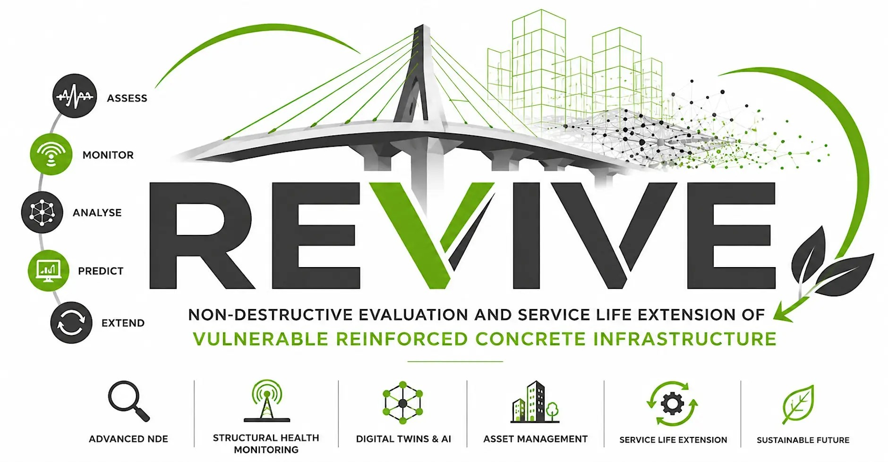

Workshop · REVIVE project
Researchers, infrastructure owners and industry partners on assessing, monitoring and extending the life of ageing infrastructure.

The REVIVE Technical Workshop took place on 23 September 2026 at the University of Southampton, hosted by Civil, Maritime and Environmental Engineering (CMEE) and organised by Dr Mehdi Kashani. It was held as part of REVIVE (Non-destructive Evaluation and Service Life Extension of Vulnerable Reinforced Concrete Infrastructure), a Horizon Europe MSCA Staff Exchanges project coordinated by Dr Kashani and funded by the European Union.
The day brought together researchers, infrastructure owners and industry practitioners to bridge the gap between academic research and practical infrastructure management. After a welcome from the Head of CMEE, Prof Yannis Ieropoulos, and an introduction to REVIVE, three keynotes set the scene from the owner and consultant perspective: Mr Tim Kersley (Network Rail) on improved resilience by unlocking hidden truths, Mr Colin George (National Highways) on the challenges of managing ageing highway structures, and Dr Chris Mundell (AtkinsRéalis) on advances in non-destructive testing for bridges with hidden critical elements, drawing on findings from the National Highways Structures Moonshot.
The technical sessions that followed covered UKCRIC, the assessment of transfer slabs for shear, distributed optical fibre sensing for damage assessment of ageing RC structures, Bayesian approaches to damage diagnosis and structural health monitoring, satellite-based monitoring of existing bridges, data-driven bridge evaluation, smart tape for structural health monitoring, and real-time damage localisation using modal curvatures and machine learning. The day closed with remarks from Dr Kashani and tours of the lab.
Key themes: non-destructive evaluation (NDE) and structural health monitoring (SHM); artificial intelligence, data analytics and digital twins; infrastructure asset management and service life prediction.
REVIVE is funded by the European Union under Horizon Europe (MSCA Staff Exchanges). Project record on CORDIS